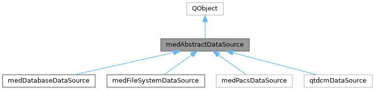
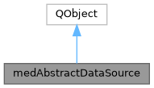

|
MUSICardio 4.2
MUSICardio application created by Inria Epione, IHU LIRYC and Université de Bordeaux
|
Loading...
Searching...
No Matches
|
MUSICardio 4.2
MUSICardio application created by Inria Epione, IHU LIRYC and Université de Bordeaux
|
Abstract base class for dynamic data sources, e.g. plugins that act as database clients This class defines access methods to the following widgets: a mainViewWidget, a source selection widget and several ToolBoxes. All dynamic data source implementation should derive from this class. More...
#include <medAbstractDataSource.h>


Signals | |
| void | dataToImportReceived (QString pathToData) |
| void | dataToFetchReceived (QHash< QString, QHash< QString, QVariant > > patientData, QHash< QString, QHash< QString, QVariant > > seriesData) |
| void | dataReceived (medAbstractData *data) |
| void | dataReceivingFailed (QString pathToData) |
| void | exportData (const medDataIndex &index) |
| Emits this signal when the source wants to export some data to a file. | |
| void | dataRemoved (const medDataIndex &index) |
| void | updateProgress (int level) |
| void | moveRequested (const QString &uid, const QString &queryLevel) |
| void | moveState (int status, const QString &pathOrMessage) |
Public Member Functions | |
| medAbstractDataSource (QWidget *parent=nullptr) | |
| virtual QWidget * | mainViewWidget ()=0 |
| virtual QWidget * | sourceSelectorWidget ()=0 |
| virtual QString | tabName ()=0 |
| virtual QList< medToolBox * > | getToolBoxes ()=0 |
| virtual QString | description () const =0 |
Abstract base class for dynamic data sources, e.g. plugins that act as database clients This class defines access methods to the following widgets: a mainViewWidget, a source selection widget and several ToolBoxes. All dynamic data source implementation should derive from this class.
|
signal |
A source data may emit a signal to a medAbstractData in memory when it successfully received the data and is ready for importing
|
signal |
A data source emits a signal when it failed to get the data
|
signal |
emitted when the source is about to remove a data.
|
signal |
A source data may emit a signal to a file on disk when it successfully received the data and is ready for importing
|
pure virtual |
Returns a short description of the data source
Implemented in medDatabaseDataSource, medFileSystemDataSource, medPacsDataSource, and qtdcmDataSource.
|
signal |
Emits this signal when the source wants to export some data to a file.
The medBrowserArea will treat the demand based on the medDataIndex.
| index |
|
pure virtual |
Returns all ToolBoxes owned by the source data plugin
Implemented in medDatabaseDataSource, medFileSystemDataSource, medPacsDataSource, and qtdcmDataSource.
|
pure virtual |
Returns the main view widget This widget is used to navigate within the data, e.g. a qTreeWidget
Implemented in medDatabaseDataSource, medFileSystemDataSource, medPacsDataSource, and qtdcmDataSource.
|
pure virtual |
Returns the source selector widget A widget that let's the user choose between different data locations
Implemented in medDatabaseDataSource, medFileSystemDataSource, medPacsDataSource, and qtdcmDataSource.
|
pure virtual |
Returns the tab name for the plugin using the data source
Implemented in medDatabaseDataSource, medFileSystemDataSource, medPacsDataSource, and qtdcmDataSource.